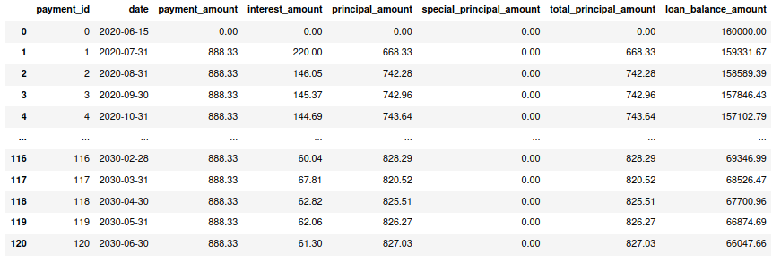
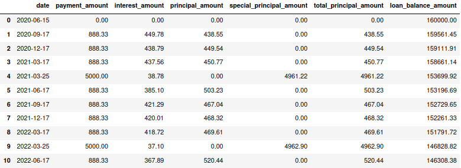

PyLoan documentation¶
Everything you need to know about PyLoan - a simple mortgage/loan calculation tool.
Features¶
PyLoan can perform simple mortgage/loan calculations:
Amortize a loan based on the specified payment schedule.
Consider ad-hoc or periodic special principal repayments during loan amortization schedule (under development).
Calculate interest payments using either 30/360 methods or actual methods.
Installation¶
Being a Python package, PyLoan requires Python (version 3.6 or higher).
Install from PyPI¶
To install the package from PyPI run this simple command in your terminal of choice:
python -m pip install pyloan
Get the Source Code¶
PyLoan is maintained on GitHub, where the code is always available.
Your can either clone the public repository:
git clone https://github.com/sudo-dakix/pyloan.git
Once you have a copy of the source, you can embed it in your own Python package, or install it into your site-packages easily by running this command from the PyLoan source code directory:
python -m pip install
Quickstart¶
This section gives an introduction on how to get started with PyLoan.
Define a loan¶
Defining a loan with PyLoan is very simple. Begin by importing the PyLoan module:
from pyloan import pyloan
Next define a loan:
loan = pyloan.Loan(loan_amount=160000,interest_rate=1.1,loan_term=10,start_date='2020-06-15')
The above defines a 10-year mortgage/loan of 160,000 EUR with annual interest of 1.1% starting on the 15th of June 2020. By default, monthly payment amount will be calculated to amortize the loan amount fully over the given loan term. Also, by default, monthly payments fall on the last day of the month.
Get payment schedule¶
To view the payment schedule and loan amortization use the get_payment_schedule method:
payment_schedule = loan.get_payment_schedule()
The above outputs a list of named tuples with the following fields per row:
date: date of payment.
payment_amount: periodic payment amount of principal and interest.
interest_amount: part of periodic payment amount that is interest.
principal_amount: part of periodic payment amount that is principal.
special_principal_amount: part of periodic payment amount that is ad-hoc/special principal.
total_principal_amount: sum of principal_amount and special_principal_amount (if applicable).
loan_balance_amount: amount of loan balance as at end of payment date.
The first row represents the loan start with the ‘loan_balance_column’ equal to the loan amount. Each subsequent row represents loan repayment.
Tip
To define payment schedule as pandas DataFrame, use the method from_records:
df=pd.DataFrame.from_records(loan.get_payment_schedule(),columns=pyloan.Payment._fields)
This will generate a familiar DataFrame with named tuple fields as columns.
Specify payment amount¶
The example above calculated the payment amount that fully amortized the loan amount over its term. It is possible to specify a payment amount. Depending on the payment amount, the loan may be fully amortized over the loan term of not. To specify the payment amount use Loan argument payment_amount. Using the example above, add payment amount of 888.33 EUR per month:
loan = pyloan.Loan(loan_amount=160000,interest_rate=1.1,loan_term=10,start_date='2020-06-15',payment_amount=888.33)
Specify payment frequency¶
The example above defines a loan with monthly repayment basis. It is possible to change this to quarterly, semi-annual or annual payments by setting value of the Loan argument annual_payments to 4, 2 or 1, respectively. Default argument value is 12 (monthly payments).
In addition, the payment schedule above assumes that payments are made at month end, with the first payment starting on the 30th of June 2020. In case repayments are not made at month end, this can be adjusted by setting the Loan argument payment_end_of_month to False and setting the argument first_payment_date to the date of the first payment date.
Below is an example of the same loan that is paid on quarterly basis, on the 15th of every month:
loan = pyloan.Loan(loan_amount=160000,interest_rate=1.1,loan_term=10,start_date='2020-06-15',payment_amount=888.33,annual_payments=4)

Specify payment date¶
In the examples above, payments were made on month end. It is possible to change this to a particular day of the month by setting of the Loan argument first_payment_date to a particular date. This will make the first and all subsequent payments fall on the specified day of the first_payment_date argument.
Following the example above, make first payment fall on the 17th of September. Each subsequent payment will fall on the 17th day of the month on which the payment is due.

Add special payments¶
To add special payments to the loan, use the add_special_payment method. For instance, following the example above, add special payment of 5000 EUR first paid on 2021-03-15 for next 8 years paid annually:
loan.add_special_payment(payment_amount=5000,first_payment_date='2021-03-17',special_payment_term=8,annual_payments=1)
Next, recalculate payment schedule considering special payments as defined above:
payment_schedule = loan.get_payment_schedule()
This updates payment schedule by considering special payments

In the example above, special payments coincided with the payment date of a regular payment. It is possible to make special payments fall on dates other than the regular payment dates.
Interest rate compounding¶
By default PyLoan is compounding interest rates based on the 30/360 day count method, specifically the so-called 30E/360 method. To change the method use the compounding_method attribute when defining a loan, which accepts the following day count conventions:
30A/360.
30U/360.
30E/360.
30E/360 ISDA.
A/360 (short for Actual/360).
A/365F (short for Actual/365 Fixed).